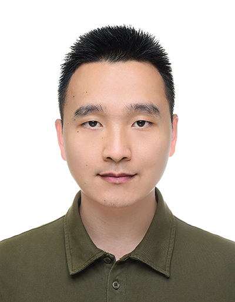

Centre for Innovation & Precision Eye Health,
Department of Ophthalmology,
Yong Loo Lin School of Medicine,
National University of Singapore,
Singapore.
Email: wangm.nus@gmail.com

Biography
I am a Senior Research Fellow at National University of Singapore, Singapore.
I received my Ph.D. from Soochow University in 2021.
Previously, I was a Postdoctoral Research Fellow at Harvard Medical School, Harvard University, USA,
and a Research Scientist at the Institute of High Performance Computing (IHPC),
Agency for Science, Technology and Research (A*STAR), Singapore.
My research interests:
Medical Image Analysis, ⚡Artificial Intelligence, ⚡Computer Vision, ⚡Deep Learning.
News
[09/2025] One paper was accepted by Pattern Recognition.
[09/2025] One paper was accepted by npj Digital Medicine.
[08/2025] One paper was accepted by IEEE Transactions on Pattern Analysis and Machine Intelligence.
[07/2025] One paper was accepted by the 12-th International Workshop on Ophthalmic Medical Image Analysis (OMIA) on MICCAI 2025 as Oral Presentation.
[07/2025] One paper was accepted by Eye.
[06/2025] Three papers were accepted by MICCAI 2025.
[05/2025] One paper was accepted by Nature Communications.
[02/2025] One paper was accepted by CVPR 2025.
[01/2025] One paper was accepted by Medical Image Analysis.
[12/2024] One paper was accepted by npj Digital Medicine.
[12/2024] One paper was accepted by IEEE Transactions on Medical Imaging.
[11/2024] One paper was accepted by Cell Reports Medicine.
[10/2024] Happy to receive the Best Paper Award of Ophthalmic Medical Image Analysis (OMIA) Workshop in MICCAI, 2024.
[08/2024] One paper was accepted by IEEE Transactions on Pattern Analysis and Machine Intelligence.
[07/2024] One paper was accepted by the 11th Ophthalmic Medical Image Analysis Workshop (OMIA) on MICCAI 2024 as Oral Presentation.
[06/2024] One paper was accepted by IEEE Transactions on Big Data.
[06/2024] One paper was accepted by Medical Image Analysis.
[05/2024] One paper was accepted by Medical Physics.
[02/2024] One paper was accepted by ISBI 2024.
[10/2023] One paper was accepted by Nature Communications.
[08/2023] One paper was accepted by IEEE Transactions on Medical Imaging.
[06/2023] Four papers were accepted by MICCAI 2023.
[05/2023] One was accepted by Meta-Radiology.
[02/2023] One was accepted by CVPR 2023.
[01/2023] One was accepted by IEEE Transactions on Biomedical Engineering (TBME).
[01/2023] One paper was accepted by IEEE Transactions on Medical Imaging.
Meng Wang, Tian Lin, Aidi Lin, Kai Yu, Yuanyuan Peng, Lianyu Wang, Cheng Chen, Ke Zou, Huiyu Liang, Man Chen, Xue Yao, Meiqin Zhang, Binwei Huang, Chaoxin Zheng, Peixin Zhang, Wei Chen, Yilong Luo, Yifan Chen, Honghe Xia, Tingkun Shi, Qi Zhang, Jinming Guo, Xiaolin Chen, Jingcheng Wang, Yih Chung Tham, Dianbo Liu, Wendy Wong, Sahil Thakur, Beau Fenner, Danqi Fang, Siying Liu, Qingyun Liu, Yuqiang Huang, Hongqiang Zeng, Yanda Meng, Yukun Zhou, Zehua Jiang, Minghui Qiu, Changqing Zhang, Xinjian Chen, Sophia Y Wang, Cecilia S Lee, Lucia Sobrin, Carol Y Cheung, Chi Pui Pang, Pearse A Keane, Ching-Yu Cheng, Haoyu Chen, Huazhu Fu. Enhancing Diagnostic Accuracy in Rare and Common Fundus Diseases with a Knowledge-Rich Vision-Language Model. Nature Communications, 2025.
Lianyu Wang, Meng Wang, Daoqiang Zhang, and Huazhu Fu. Vision-Language Model IP Protection via Prompt-based Learning. IEEE/CVF Conference on Computer Vision and Pattern Recognition (CVPR 2025), https://doi.org/10.48550/arXiv.2503.02393. (Co-First Author).
Tian Lin, Meng Wang, Aidi Lin, Xiaoting Mai, Huiyu Liang, Yih-Chung Tham, Haoyu Chen. Efficiency and safety of automated label cleaning on multimodal retinal images. npj Digital Medicine, 8, 10 (2025).(Co-First Author).
Yuanyuan Peng, Aidi Lin, Meng Wang, Tian Lin, Linna Liu, Jianhua Wu, Ke Zou, Tingkun Shi, Lixia Feng, Zhen Liang, Tao Li, Dan Liang, Shanshan Yu, Dawei Sun, Jing Luo, Ling Gao, Xinjian Chen, OCT reading group, Ching-Yu Cheng, Huazhu Fu, Haoyu Chen. Enhancing AI Reliability: A Foundation Model with Uncertainty Estimation for Optical Coherence Tomography based Retinal Disease Diagnosis. Cell Reports Medicine, 2024.(Co-First Author).
Meng Wang, Tian Lin, Ting Xu, Ke Zou, Haoyu Chen, Huazhu Fu, Ching-Yu Cheng. Enhancing Large Foundation Models to Identify Fundus Diseases Based on Contrastive Enhanced Low-Rank Adaptation Prompt. International Workshop on Ophthalmic Medical Image Analysis., Cham: Springer Nature Switzerland, 2024: 157-166.(Best Oral Paper Award).
Lianyu Wang, Meng Wang, Huazhu Fu, Daoqiang Zhang. Say No to Freeloader: Protecting Intellectual Property of Your Deep Model. IEEE Transactions on Pattern Analysis and Machine Intelligence, 2024, DOI: 10.1109/TPAMI.2024.3450282.(Co-First Author).
Meng Wang, Tian Lin, Lianyu Wang, Aidi Lin, Ke Zou, Xinxing Xu, Yi Zhou, Yuanyuan Peng, Qingquan Meng, Yiming Qian, Guoyao Deng, Zhiqun Wu, Junhong Chen, Jianhong Lin, Mingzhi Zhang, Weifang Zhu, Changqing Zhang, Daoqiang Zhang, Rick Siow Mong Goh, Yong Liu, Chi Pui Pang, Xinjian Chen, Haoyu Chen, Huazhu Fu. Uncertainty-inspired Open Set Learning for Retinal Anomaly Identification. Nature Communications, 2023, 14(1): 6757.
Meng Wang, Lianyu Wang, Xinxing Xu, Ke Zou, Yiming Qian, Rick Siow Mong Goh, Yong Liu, and Huazhu Fu. Federated Uncertainty-Aware Aggregation for Fundus Diabetic Retinopathy Staging. Medical Image Computing and Computer Assisted Intervention–MICCAI 2023, vol 14221.Springer, Cham.
Meng Wang, Tian Lin, Yuanyuan Peng, Weifang Zhu, Yi Zhou, Fei Shi, Kai Yu, Qingquan Meng, Yong Liu, Zhongyue Chen, Yuhe Shen, Dehui Xiang, Haoyu Chen, and Xinjian Chen. Semi-SGO: A Self-Guided Optimization Semi-Supervised Method for Joint Segmentation of Macular Hole and Cystoid Macular Edema in Retinal OCT Images. IEEE Transactions on Biomedical Engineering, vol. 70, no. 7, pp. 2013-2024, 2023.
Meng Wang, Weifang Zhu, Fei Shi, Jinzhu Su, Haoyu Chen, Kai Yu, Yi Zhou, Yuanyuan Peng, Zhongyue Chen, and Xinjian Chen. MsTGANet: Automatic Drusen Segmentation from Retinal OCT Images. IEEE Transactions on Medical Imaging, vol.41, no.2, pp.394-406, 2022.
Meng Wang, Kai Yu, Xinxing Xu, Yi Zhou, Yuanyuan Peng, Yanyu Xu, Rick Siow Mong Goh, Yong Liu, and Huazhu Fu. Tiny-Lesion Segmentation in OCT via Multi-scale Wavelet Enhanced Transformer. Ophthalmic Medical Image Analysis: 9th International Workshop, OMIA 2022, Held in Conjunction with MICCAI 2022, Cham: Springer International Publishing, 2022: 125-134.
Meng Wang, Weifang Zhu, Kai Yu, Zhongyue Chen, Fei Shi, Yi Zhou, Yuhui Ma, Yuanyuan Peng, Dengsen Bao, ShuanglangFeng, LeiYe, DehuiXiang, andXinjianChen. Semi-Supervised Capsule cGAN for Speckle Noise Reduction in Retinal OCT Images. IEEE Transactions on Medical Imaging, vol. 40, no. 4, pp. 11681183, 2021.
Lianyu Wang, Meng Wang, Daoqiang Zhang, and Huazhu Fu. Model Barrier: A Compact Un-Transferable Isolation Domain for Model Intellectual Property Protection. IEEE/CVF Conference on Computer Vision and Pattern Recognition (CVPR 2023), 2023: 20475-20484. (Co-First Author).
Meng Wang, KaiYu, Chun-MeiFeng, YimingQian, KeZou, LianyuWang, RickSiowMongGoh, YongLiu, and Huazhu Fu. Reliable Federated Disentangling Network for Non-IID Domain Feature. IEEE Transactions on Big Data 2024.
Meng Wang, Kai Yu, Zhiwei Tan, Ke Zou, Rick Siow Mong Goh, and Huazhu Fu. Reliable Joint Segmentation of Multiple Lesions from Medical Images. Medical Physics 2024.
Honors & Awards
Excellent Doctoral Dissertation of Soochow University, Mar. 2024.
IEEE Transactions on Medical Imaging, Distinguished Reviewer, Oct. 2023.
Best Paper Runner-up Award of Resource-Efficient Medical Image Analysis Workshop in MICCAI, Sep. 2022.
2022, International Conference on Medical Image Computing and Computer Assisted Intervention (MICCAI 2022), Travel Award.
Suzhou Industrial Park Scholarship, Jun. 2021.
Scholarships for postgraduate studies at Soochow University, 2018-2019, 2019-2020, 2020-2021.
AI-Challenger 2018 International Competition of Fundus Edema Lesion Region Automatic Segmentation: 3rd place in biweekly competition and 4th place in the finals.
Professional Activities
Guest Editors:
1. IEEE Journal of Biomedical and Health Informatics (IEEE JBHI, IF: 6.7)
2. Frontiers in Medicine (IF: 3.0)
3. Frontiers in Radiology (IF: 2.3)
Chairs:
1. Chair: The 12th ophthalmic medical image analysis workshop on MICCAI 2025.
2. Program committee: The IEEE International Conference on Bioinformatics and Biomedicine (BIBM) 2025.
3. Track chair: The 18th International Conference on Biomedical Engineering 2024 (ICBME2024).
Conference/Journal Reviews:
1. npj Digital Medicine
2. IEEE Transactions on Medical Imaging (TMI)
3. IEEE Transactions on Neural Networks and Learning Systems (TNNLS)
4. Journal of Biomedical and Health Informatics (JBHI)
5. IEEE Transactions on Biomedical Engineering (TBME)